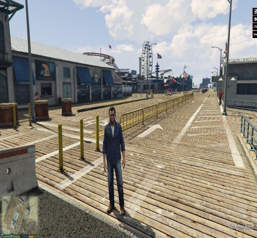

Nenhum item na sacola de compras
Nenhum item na sacola de compras
A Yung Lixo Store vende principalmente discos de músicas com qualidade 0, discos de cd audio-lixuais, com músicas de explodir os timpanos de tão alto
Nossa loja fica em Santa Monica Pier, em Los Santos, aonde são vendidas mais de 5 bilhões de unidades de lixo por hora

Compre seus cds e discos ruins na Yung Lixo shop. Acesse nossa loja ou entre em contato se tiver dúvidas. Conheça também nossa história e nossos diferenciais.
Começou sua carreira musical em 2009 com o nome de MC FEDEGOSO com o álbum Black Power Nego, ele decidiu mudar seu nome em 2012 para MC VV, lançando VIP'S, Volver do Revólver e PINTOCÓPTERO , que foi feito em 2013 e lançado em 2017 no seu canal do YouTube.
No ano seguinte, lançou o álbum SEGURA ESSE MOLEQUE, que foi bem aceito pelos seus inscritos, e até conhecido exclusivamente pelas músicas, sem conhecerem o mesmo como um criador de vídeos, fazendo assim lançar o Mixtape Pra Te Impressionar, que foi excluído meses depois por motivos pessoais e não agradar mais ao artista.
No período de 2020, lançou o Quarentapes com uma única faixa (Phonesex) sem qualquer teor irônico, e depois o Trashtalk, com algumas faixas cômicas, mas agora com uma produção consideravelmente melhor e mais músicas melódicas e sentimentais.
No ano seguinte lançou o EP Break Up Album, que apresentou e adotou por completo o seu novo pseudônimo, yun li, usado por completo em um álbum apenas no próximo ano, o Cybertapes. Ainda em abril, ele voltou a assinar como MC VV para o BONDA , que estreou no dia primeiro. O álbum conta várias histórias e possui músicas paródias de diversos artistas famosos, o mesmo conta com 4 partes. (BONDA 2, BONDA 3 e BONDA GOOD 4SS JOB)